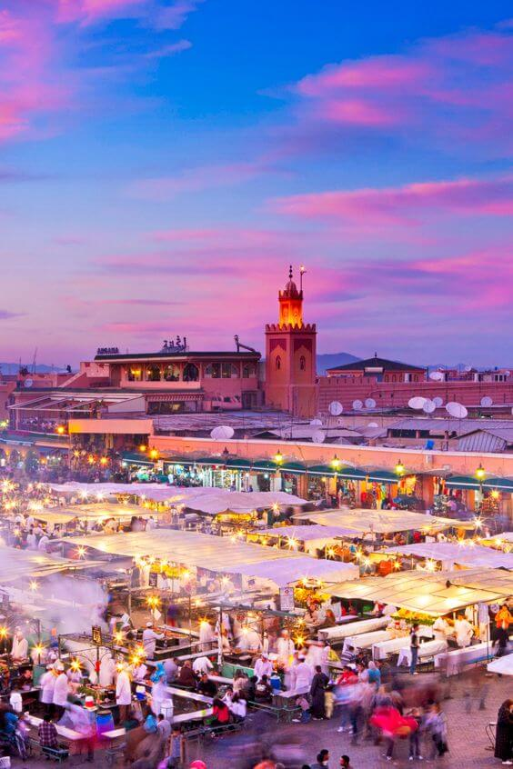
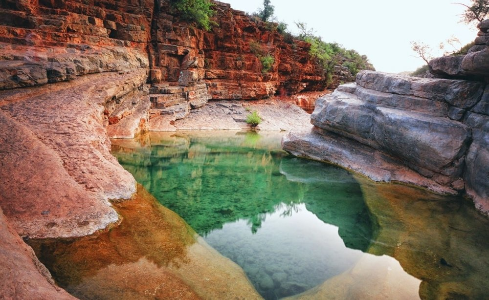
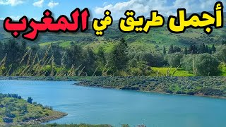

أشهر المدن السياحية

مراكش
المدينة الحمراء وقلب المغرب النابض
استكشف المدينة
الدار البيضاء
العاصمة الاقتصادية والمدينة العصرية
استكشف المدينة

فاس
العاصمة الثقافية والروحية للمغرب
استكشف المدينة

شفشاون
المدينة الزرقاء الساحرة
استكشف المدينة